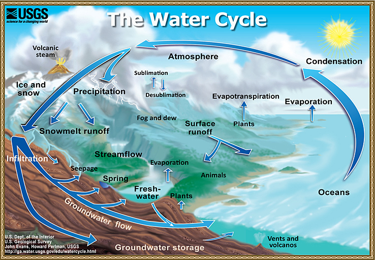

The water cycle describes how water evaporates from the surface of the earth, rises into the atmosphere, cools and condenses into rain or snow in clouds, and falls again to the surface as precipitation. The water falling on land collects in rivers and lakes, soil, and porous layers of rock, and much of it flows back into the oceans, where it will once more evaporate. The cycling of water in and out of the atmosphere is a significant aspect of the weather patterns on Earth. 